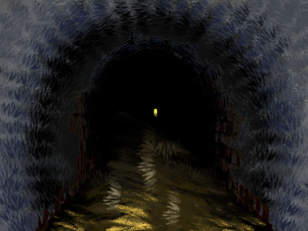

Aufgabenstellung IAD
Frage 1: Ist eigentlich weniger immer mehr?
Frage 2: Nehmen Sie an, Sie könnten irgend eine bereits bestehende – aus ihrer Sicht unmögliche – Website neu gestalten. Welche ist das? Warum? Wie?
Das Restaurant ist sehr bekannt in Bern, vor allem für die grossen Cordon-Bleus. Leider aber ist die Webseite nicht repräsentativ mit dem Geschmack der Spezialität.Die Farben sind zu grell und es hat Rechtschreibefehler auf der Webseite.
Hier reicht ein simples Design, um mehr Qualität und seriosität darzustellen. Durch das Bild erhält man ebenfalls einen Eindruck, wie das Restaurant eingerichtet ist.
{kind=link}
{kind=link}
{kind=link}
{kind=link}
{kind=link}
Frage 4: Was denken Sie, sind Sie manchmal auch etwas «verrückt»?
Frage 5: Warum folgen wir eigentlich unserer Sehnsucht nicht?
Ich denke viele Leute folgen der Sehnsucht nicht, da es Überwindung braucht aus der Comfortzone zu brechen.Der Weg, den man vor sich hat ist dunkel und lange. Aber am Ende des Tunnels findet man die Belohnung von harter Arbeit, weshalb es sich lohnt sich auf diesen Weg zu machen. 
{kind=link}